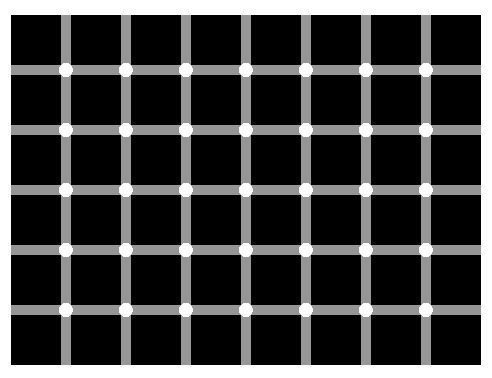
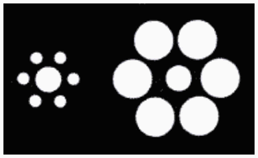
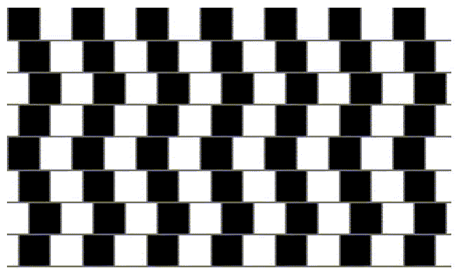
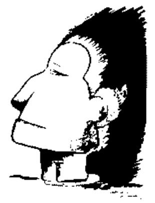
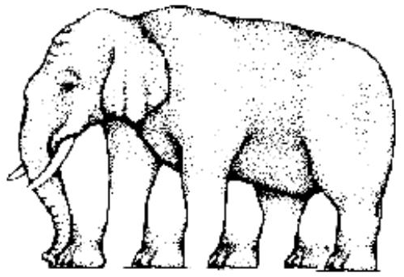
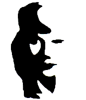
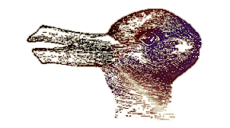
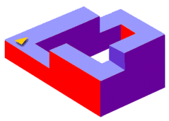
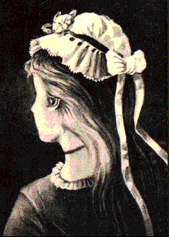
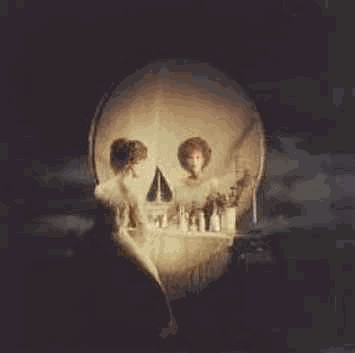

Hersentests & Experimenten |
|
| zwart blauw groen oranje roze geel paars rood zwart wit |
Je zult merken dat het opnoemen van de kleuren
zeer moeizaam verloopt omdat je hersenen - zonder dat je dat wilt -
toch de woorden gaan oplezen...
 terug naar de index
terug naar de index


De Vraag:
Hoeveel zwarte bolletjes zie je in het plaatje?
Merk op dat het een statisch plaatje is (het verandert dus niet); we houden
je niet voor de gek!
Het Antwoord:
 Klik hier!...
Klik hier!...
 terug naar de index
terug naar de index

Is het linker middelste rondje groter dan het rechter middelste rondje in de onderstaande figuur?

Nee, het is gezichtsbedrog, ze zijn even groot.
Staan de horizontale lijnen evenwijdig of staan ze schuin of krom in het onderstaande plaatje?

Ook hier is het gezichtsbedrog misleidend, de lijnen zijn exact horizontaal, recht en evenwijdig.
Wat zie je in het onderstaande plaatje?

Je kunt er zowel een indiaan als een eskimo in zien. Het is een indianengezicht (hoofd) dat naar links kijkt, of een eskimo die naar rechts voor een zwart gat staat.
Hoeveel poten heeft de onderstaande olifant?

De olifant is zo getekend dat het aantal poten niet goed is vast te stellen...
Wat zie je in het onderstaande plaatje?

Je kunt er zowel een vrouwengezicht als een man met een saxofoon in zien.
Wat zie je in het onderstaande plaatje?

Je kunt er zowel een konijnen- als eendenkop in zien. De snavel van de eend zijn de oren van het konijn.
Stel je voor dat je op de plaats van het pijltje staat en begint met lopen...

Het plaatje is bedrieglijk getekend waardoor het net lijkt of het een alsmaar stijgende of dalende trap is.
Wat zie je in het onderstaande plaatje?

Je kunt er zowel een meisje als een oude vrouw ("heks") in zien. Het oor van het meisje is het oog van de vrouw (de halsketting is de mond).
Wat zie je in het onderstaande plaatje?

Je kunt er zowel een doodskop (schedel) als een vrouw voor een kaptafel met een spiegel in zien.
 terug naar de index
terug naar de index

Lees de zin hieronder:
FEMKE VOND HET HEEL TOF DAT FRITS
HAD GEVRAAGD OF ZE MEE WILDE
GAAN NAAR DE FILM OF DE DISCO
De Vraag:
Hoeveel keer zie de letter F in de zin hierboven?
Je mag maar één keer tellen!
Niet stiekem nog een keer tellen!
|
Neem 1000 en tel er 40 bij op. Tel er 1000 bij op. Tel er 30 bij op en dan nog eens 1000. Tel er 20 bij op. Tel er 1000 bij op en dan nog eens 10. |